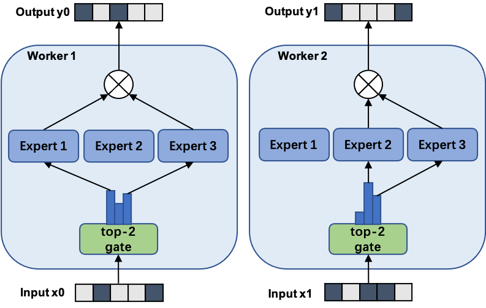

15-418 Course Project: Optimized Mixture of Experts LLM (MoE) Inference
TITLE: Optimized Mixture of Experts LLM (MoE) Inference
SUMMARY: We plan to implement an optimized attention layer to speedup mixture of experts LLM (MoE) inference on the NVIDIA GPUs in the lab. We'll explore architectural optimizations, such as leveraging shared memory for reduced access times and employing asynchronous operations to enhance GPU utilization. This desgin is expected to significantly improve inference efficiency, offering a pathway to more responsive LLM systems.
BACKGROUND: The focus of our project is on accelerating the inference phase of Large Language Models (LLMs) employing a Mixture of Experts (MoE) framework, specifically, by optimizing the attention layer on NVIDIA GPUs. LLMs, particularly those utilizing MoE, are known for their ability to handle a wide range of complex tasks in natural language processing, from translation to domain specific knowledge. The MoE approach involves routing inputs to the most relevant 'expert' neural networks among a larger pool, depending on the specific task given by the user. This method allows for more specialized and efficient processing but introduces significant computational overhead, especially in the attention mechanism that determines the routing. The attention layer is pivotal in MoE models as it dynamically assigns different parts of the input data to the most relevant experts. This process, however, is highly compute-intensive, because it involves large matrix multiplications and data transformations that can become bottlenecks during inference, especially when handling large input sequences or a high number of experts.

Parallelism can significantly benefit this aspect of MoE LLMs for several reasons:
Matrix Multiplications: The attention mechanism's core operations involve matrix multiplications that are inherently parallelizable. Each multiplication operation is independent and can be distributed across multiple GPU cores.
Data Routing: The process of routing input data to various experts can also be parallelized, as the decision and subsequent data transfer for each data segment can be handled independently.
Expert Processing (Most important): Since each 'expert' can operate independently, their computations can be performed in parallel, which significantly reduce the overall inference time.
THE CHALLENGE: Workload:
Data Dependencies and Synchronization: The attention mechanism within MoE LLMs involves calculating attention scores based on the entire input sequence, which leads to dependencies that can limit parallelization. Synchronizing these calculations to ensure that each 'expert' receives the correct input data for processing can cause overhead and extra complexity.
Memory Access Patterns: LLMs, especially those with MoE architectures, require accessing large matrices for computations, which pose challenges in terms of memory locality.
Communication to Computation Ratio: The need to route data to the appropriate 'experts' based on attention scores introduces significant communication overhead, ie data transformation among GPU cores Constraints:
Resource Limitations: GPUs have finite resources, including memory bandwidth and compute units. Therefore, we need to design efficient methods to utilize these limited computing power
Hardware constrains: The mapping of the MoE LLM workload to the hierarchical memory and parallel execution units of GPU can also constarin our performances
Tracking/Debugging: The complexity of CUDA and other parallel programming frameworks adds additional constains on the scalability of our design given the limited time.
RESOURCES: We are planning to start from scratch. However, we will refer to external resources such as academic paper and MoE implementations Reference:
https://github.com/AdamG012/moe-paper-models Starter Code (may use as reference):
https://github.com/XueFuzhao/OpenMoE
https://github.com/laekov/fastmoe
https://github.com/pytorch/PiPPy
GOALS AND DELIVERABLES: Our project is centered around the optimization of the attention layer in MoE LLMs for accelerated inference on NVIDIA GPUs. Specifically: a. PLAN TO ACHIEVE
Optimized Attention Layer Implementation: Develop and implement an optimized version of the attention mechanism specifically for MoE LLMs on NVIDIA GPUs. This implementation will aim for improved computational efficiency and reduced inference times compared to current benchmarks. We aim for at least a 2x speedup in inference times as a baseline for success, measured by preliminary analysis which reflects substantial inefficiencies in current attention layer implementations.
Documentation and Analysis: Provide detailed documentation of the optimization techniques employed, along with an analysis of their impact on performance. b. HOPE TO ACHIEVE
More Ambitious Speedups: If progress exceeds expectations, we aim to explore additional optimization, potentially achieving beyond a 3x speedup in inference times.
Extended Functionality: Incorporate adaptive mechanisms to dynamically adjust the computational resources allocated to different experts based on real-time performance metrics, which can enhance the model's efficiency and scalability. c. Demonstration Plan At the poster session, we plan to present an interactive demo showcasing the real-time performance of an MoE LLM with and without our optimized attention layer. Additionally, we'll display comparative speedup graphs and profiling data to visually represent our achievements. Hopefully, users will be able to input text prompts and observe the difference in response times and resource utilization
PLATFORM CHOICE:
Computer: Windows
Language: C/C++; Python
Mainly rely on Open MPI. The motivation is that Open MPI allows for detailed specification of how computations are distributed across the GPU's cores. Addtionally, it provides various memory types and management techniques, allowing for optimized data access patterns that can significantly reduce latency and increase throughput in compute-intensive applications like LLM inference Lastly, we are relatviely familiar with Open MPI thanks to the training of HW3/4
SCHEDULE: Week 1: Setup and initial performance benchmarking of MoE LLM on NVIDIA GPUs. Week 2: Begin attention layer optimizations; focus on memory access patterns. Week 3: Implement parallel processing techniques for expert selection and evaluation. Week 4: Intermediate milestone: Evaluate optimizations and adjust based on results. Week 5: Finalize optimizations; start integrating improvements and testing. Week 6: Final performance evaluation, prepare presentation and demo materials.